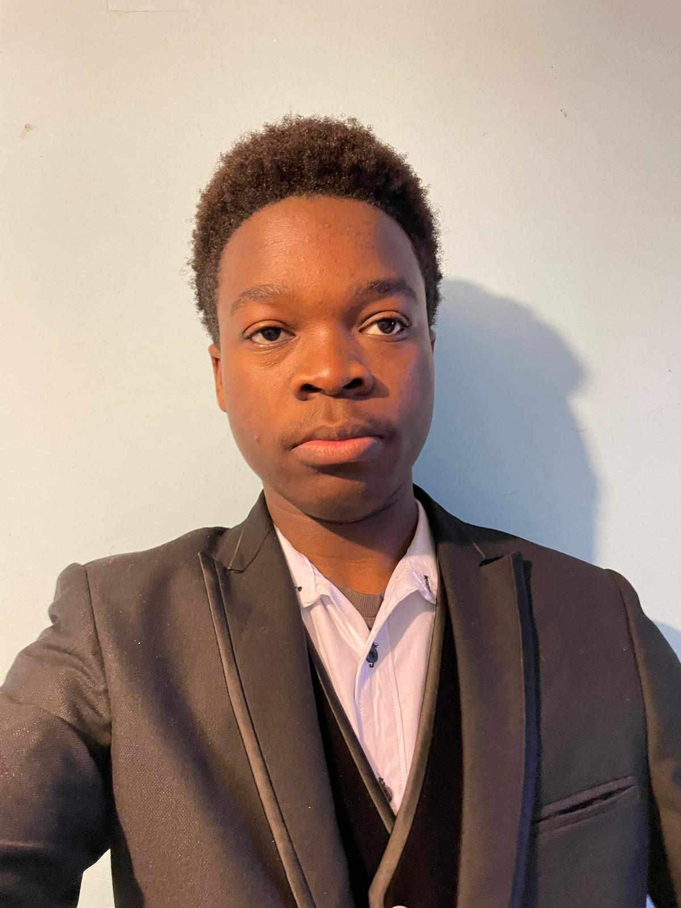
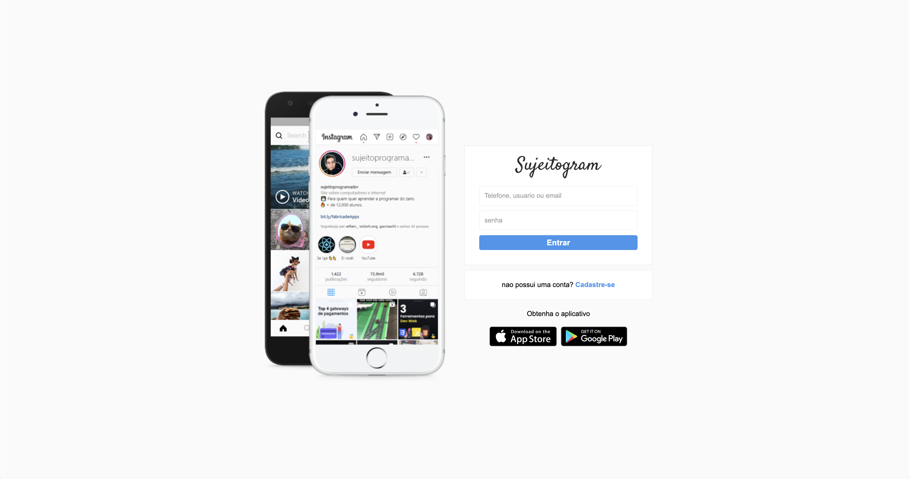
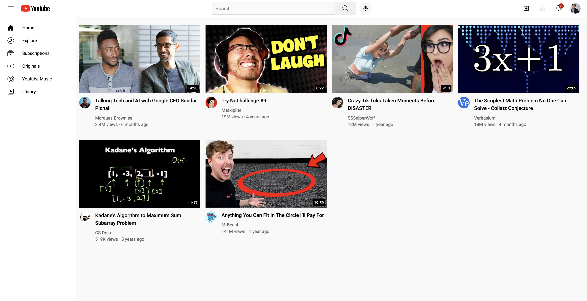

Portfolio pessoal
Página pessoal responsiva para apresentar perfil, competências e projetos.
Ver demoFront-End Developer Júnior
Recém-licenciado em Engenharia Informática e de Multimédia pelo ISEL, com foco em desenvolvimento web, interfaces responsivas e aprendizagem contínua.
Sobre
Tenho bases em HTML, CSS, JavaScript, PHP, REST APIs, MySQL, Git e GitHub. Durante a licenciatura trabalhei em projetos académicos e aprofundei o interesse por interfaces web, experiência do utilizador e desenvolvimento front-end.
Neste momento estou a reforçar fundamentos através de prática constante, pequenos projetos e documentação do meu percurso no GitHub. Procuro a minha primeira oportunidade profissional na área de desenvolvimento web.

Projetos
Exercícios e interfaces criadas para consolidar HTML, CSS, responsividade e organização de código.
Página pessoal responsiva para apresentar perfil, competências e projetos.
Ver demo
Páginas de login e cadastro focadas em formulários, layout e responsividade.
Ver demo
Clone estático para praticar grids, sidebar, header, thumbnails e detalhes de interface.
Ver demoContacto